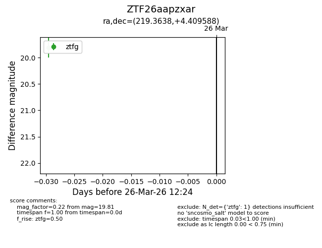
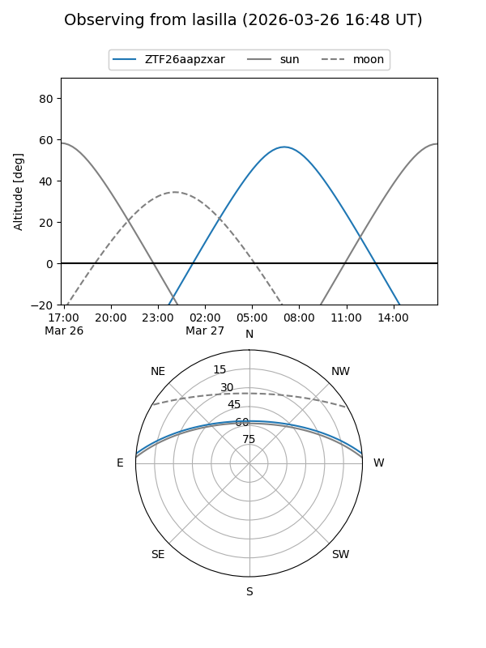
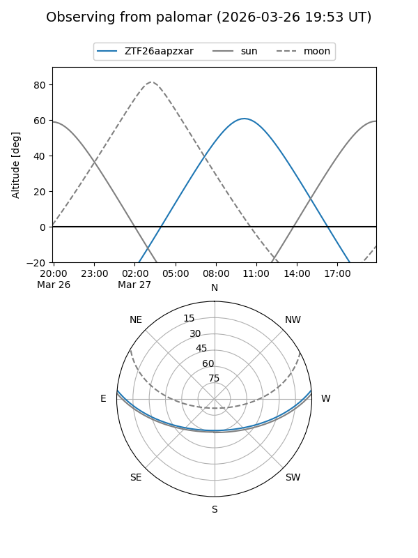
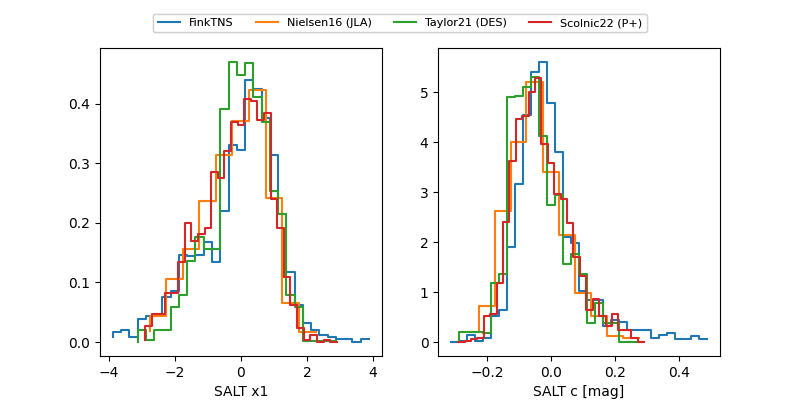

ZTF26aapzxar
Target ZTF26aapzxar at 2026-03-26 12:26
Aliases and brokers:
FINK: link
Lasair: link
ALeRCE: link
alt names
ZTF26aapzxar (ztf,fink_ztf)
Coordinates:
equatorial (ra, dec) = 219.3638,+4.40959
equatorial (HMS+DMS) = 14:37:27.30,+04:24:34.52
galactic (l, b) = (355.6753,+56.01176)
Flags:
Photometry:
last ztfg=19.81
1 ztfg detections
Lightcurve

Visibility


Additional plots
